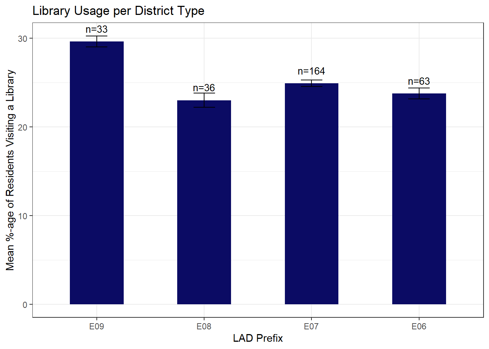
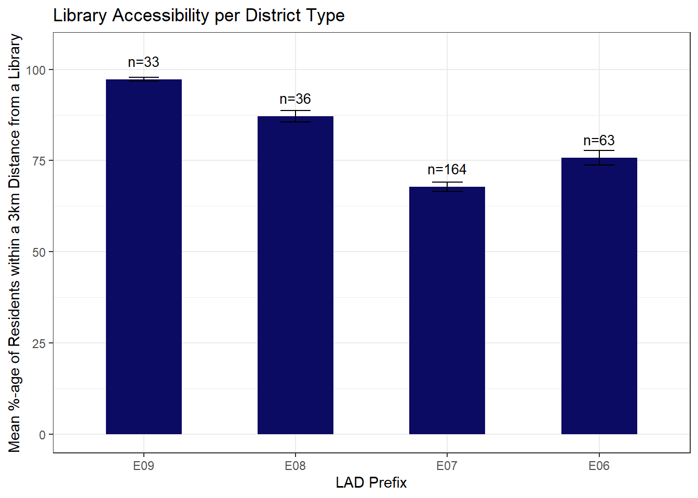

I do a short analysis (incl. visualizations) of library usage across districts in England. More specifically, I look at differences accross district types and at spatial dependencies.
Author
Dominik G. Eichhorn
Published
July 29, 2025
Introduction
I really enjoy going to libraries, be it to research something academic or to read for pleasur. My passion for visiting libraries prompted me to check whether there are any data sets on library usage. Unfortunately, I couldn’t find such a data set for Germany. However, I came accross some data on the usage and access to libraries in England. In the following, I will provide a short analysis (incl. visualizations) of that data.
Data
My analyses make use of information contained in two data sets provided by the UK Office of National Statistics:
# read in data set & name colsusage_df <-read.csv("visited-a-public-library-table-data.csv", skip =7)colnames(usage_df) <-c("LAD_code", "LAD_name", "visits")head(usage_df)
The second, reports for every LAD in England the percentage of residents living within a 30 minute walk of the nearest library as of 2024. This is the same as the percentage of residents living within a radius of 3km of the nearest library (given that the average walking speed is 6 kmh). I will refer to this data set as the access data set. The data is provided under the following url: https://www.ons.gov.uk/explore-local-statistics/indicators/library-walk.
# read in data set & name colsaccess_df <-read.csv("library-walk-table-data.csv", skip =7)colnames(access_df) <-c("LAD_code", "LAD_name", "proximity")head(access_df)
I was wondering whether the LAD-codes only serve as a unique identifier or whether they provide further information on the respective LAD. After some research on the internet, I found out that in fact the first three characters of the LAD-code state the type of district or LAD prefix. There are for different types of districts or LAD prefixes:
E06 = Unitary Authority: mixture of urban and rural areas.
E07 = Non-Metropolitan District: rural areas or small towns.
E08 = Metropolitan District: large towns and cities.
E09 = London Borough: rural and small towns.
It seems reasonable to expect that the average percentage of residents that visited a library varies accross district types. More precisely, I would expect that the more “urban/metropolitan” a district is, the higher the percentage of residents that visited a library. Conversely, the more “rural” a district is, the lower the percentage of residents that visited a library. According to this logic, I would expect that the percentage of residents that visited a library is highest for the districts belonging to Greater London (E09), followed by metropolitan districts (E08), Unitary Authorities (E06) as mixture of urban and rural areas and finally the purely rural districts (E06).
To check this, I assign each district its district type (i.e. LAD prefix) and then compute the mean percentage of residents that visited a library per district type as well as the corresponding standard error around the mean.
library(dplyr) # for data manipulationlibrary(ggplot2) # for plotting# assign district typeusage_df$LAD_prefix <-factor(substr(usage_df$LAD_code, 1, 3),levels =c("E09","E08","E07","E06"))p1_df <- usage_df %>%group_by(LAD_prefix) %>%summarise(mean_visits =mean(visits, na.rm=TRUE),sd_visits =sd(visits, na.rm=TRUE),n =sum(!is.na(visits)),se = sd_visits/sqrt(n) )p1 <-ggplot(p1_df, aes(LAD_prefix, mean_visits)) +geom_col(width =0.5, fill="#0b0b64") +geom_errorbar(aes(ymin=mean_visits - se, ymax=mean_visits + se),width =0.2) +geom_text(aes(label=paste0("n=", n)), vjust=-1.2, size=3.5) +labs(title ="Library Usage per District Type",x ="LAD Prefix",y ="Mean %-age of Residents Visiting a Library" ) +theme_bw()p1

As expected, the districts belonging to Greater London (E09) have the highest percentage of residents that visited a library. Two things are however astonishing: On the one hand, the metropolitan districts (E08), which I expected to rank second, rank lowest. On the other hand, the rural district (E07), which I expected to rank lowest, in fact rank second. This is all the more remarkable as for the rural districts the accessibility of libraries is worst, as can be seen from the plot below.
Show code
access_df$LAD_prefix <-factor(substr(access_df$LAD_code, 1, 3),levels =c("E09","E08","E07","E06"))access_df <- access_df[!is.na(access_df$LAD_prefix),]p2_df <- access_df %>%group_by(LAD_prefix) %>%summarise(mean_proximity =mean(proximity, na.rm=TRUE),sd_proximity =sd(proximity, na.rm=TRUE),n =sum(!is.na(proximity)),se = sd_proximity/sqrt(n) )p2 <-ggplot(p2_df, aes(LAD_prefix, mean_proximity)) +geom_col(width =0.5, fill="#0b0b64") +geom_errorbar(aes(ymin=mean_proximity - se, ymax=mean_proximity + se),width =0.2) +geom_text(aes(label=paste0("n=", n)), vjust=-1.2, size=3.5) +ylim(0,105) +labs(title ="Library Accessibility per District Type",x ="LAD Prefix",y ="Mean %-age of Residents within a 3km Distance from a Library" ) +theme_bw()p2

Spatial Analysis of Library Usage
Now, let’s have a look at spatial differences in the usage of libraries. More specifically, I want to plot a map of England with each district coloured according to its percentage of residents that visited a library. In order to plot the districts on a map, I need for every district information about its geographical boundaries. This information can be obtained from ONS’s Open Geography Portal.
library(sf) # for handling spatial data# get geographical boundariesurl <-"https://services1.arcgis.com/ESMARspQHYMw9BZ9/arcgis/rest/services/LAD_MAY_2025_UK_BUC/FeatureServer/0/query?outFields=*&where=1%3D1&f=geojson"boundaries <-read_sf(url)usage_df <-left_join(boundaries, usage_df, by =c("LAD25CD"="LAD_code"))
The boundaries dataframe contains for each district a description of its territory as a polygon. Next, I join the boundaries data and the usage data using a left join. The resulting data set is the basis for plotting a map of England with each district coloured according to the percentag of residents that visited a library.
Looking at the above plot, there seems to be some degree of positive spatial dependence. That is the neighbours of districs with high percentages of residents visiting a library also have high percentages (and vice versa). As a result there seem to be clusters with either all districts having higher or all having lower percentage of residents visiting libraries. If there was a negative spatial dependence, the neighbours of districts with high percentages would have low percentages (and vice versa).
Instead of relying only on visual inspection, I rather want to see if this impression can be substantiated by some quantitative measure. Such a measure for quantifying spatial dependence, or more precisely spatial autocorrelation, is Global Moran’s \(I\)(Moraga 2023). It is defined as: \[ I = \frac{n}{W} \frac{\sum_{i=1}^n \sum_{j=1}^n w_{ij} (x_i - \bar{x})(x_j - \bar{x})}{\sum_{i=1}^n (x_i-\bar{x})^2} \] where \(n\) is the number of districts, \(x_i\) is the observed value of the variable of interest in district \(i=1,\dots, n\) and \(\bar{x}\) is the mean of all \(x_i\)’s. The \(w_{ij}\)’s are weights that measure the spatial proximity between districts \(i\) and \(j\) (with \(w_{ii}=0\)) and \(W\) is the sum of all weights, i.e. \(W=\sum_{i=1}^n \sum_{j=1}^n w_{ij}\). The exact definition of proximity and hence also of \(w_{ij}\) depends on the application at hand. In this application here proximity means that two districts are direct neighbours. Consequently, the weights are defined as: \[ w_{ij} =
\begin{cases}
1, & \text{if district } i \text{ and } j \text{ are direct neighbours}, \\
0, & \text{else}.
\end{cases}\] Intuitively, \(I\) is the correlation between a district’s value and the weighted average of its neighbour’s values. The interpretation of Moran’s \(I\) is identical to the interpretation of the Pearson coefficient of correlation (\(-1\) = perfect negative association, \(0\) = no association, \(+1\) = perfect positive association).
To compute Moran’s \(I\), the following three steps need to be performed:
For each district \(i\), determine the districts \(j\) that are direct neighbours of \(i\).
For each district \(i\), assign a weight of \(1\) to all its direct neighbours and a weight of \(0\) to all other districts.
Use those weights, to compute \(I\).
These three steps can be performed utilizing the spatial dependence R package (spdep) as follows:
library(spdep)sf_use_s2(FALSE)usage_df <- usage_df[!is.na(usage_df$visits), ]# 1. determine direct neighbours (as queen in chess can move)neighbours <-poly2nb(usage_df, queen=TRUE)# 2. assign weights, i.e. from list of neighbours compute list of weightsweights <-nb2listw(neighbours, style="B", zero.policy=TRUE)# 3. compute Moran's I(I <-moran(usage_df$visits, weights, length(neighbours), Szero(weights))[[1]])
[1] 0.3171098
A Moran’s \(I\) of 0.32 means that there is a moderate degree of positive spatial dependence, which supports the impression I had from the visual inspection. Finally, I want to test whether Moran’s \(I\) is statistically significantly positive. So the null hypothesis is that \(I\) is less than or equal to \(O\), whereas the alternative hypothesis is that \(I\) is greater than \(0\). This can be done using a Monte-Carlo based approach.
moran.mc(usage_df$visits, weights, nsim=999, alternative ="greater")
Monte-Carlo simulation of Moran I
data: usage_df$visits
weights: weights
number of simulations + 1: 1000
statistic = 0.31495, observed rank = 1000, p-value = 0.001
alternative hypothesis: greater
The result of the hypothesis test suggests that there is significant positive spatial autocorrelation, i.e., nearby districts have similar percentage of residents visiting a library.
Conclusion
In summary, there are two insights: First, library usage differs accross district type. Surprisingly, it is the rural districts rather than the metropolitan districts that rank second in library usage after the districts belonging to Greater London. Second, there is positive spatial dependence in library usage between neighbouring districts.
References
Moraga, Paula. 2023. Spatial Statistics for Data Science: Theory and Practice with r. Chapman; Hall/CRC.